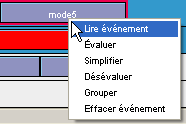
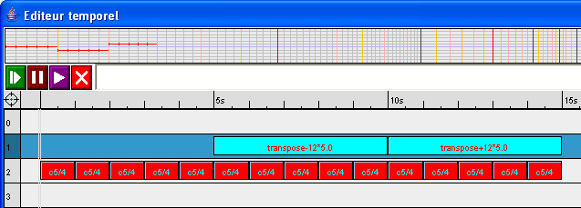

L'éditeur temporel permet d'éditer et de manipuler des expressions musicales. Comme pour les éditeurs habituels, les objets musicaux peuvent être placés en séquence sur différentes pistes, et les pistes sont mixées pour constituer l'objet global. Les pistes peuvent contenir des objets musicaux ou des fonctions.
Les commandes de sélection et de manipulation du curseur sont intuitives et similaires à celles de la plupart des éditeurs textes.
Les expressions musicales en provenance d'autres éléments de l'interface utilisateur peuvent être glissées dans l'éditeur :
Différentes opérations peuvent être réalisées directement sur les objets individuels : transposition, atténuation, expansion / compression, duplication rapide et changement du canal MIDI. En cliquant sur le coté de l'objet, la forme du curseur change et en bougeant la souris il est possible de changer les valeurs des paramètres.
Les objets peuvent être copiés en les faisant glisser avec la souris tout en maintenant la touche Alt enfoncée. Les pistes peuvent être copiées en les faisant glisser sur une nouvelle piste tout en maintenant la touche Alt enfoncée.
Les objets peuvent également être copiés, coupés et collés en appuyant respectivement sur Ctrl+C, Ctrl+X, et Ctrl+V.
La plupart des opérations effectuées peuvent être annulées par un appui sur Ctrl+Z.
Le menu déroulant suivant est obtenu avec un clic droit sur un objet. Il permet d'exécuter des commandes différentes :

Le menu déroulant suivant est obtenu avec un clic droit sur le début d'une piste. Il permet d'exécuter des commandes différentes :
Le menu déroulant ci-dessous est obtenu avec un clic droit sur la cible. Il propose les commandes globales qui sont également accessibles par les boutons en haut de l'éditeur :
Le menu déroulant suivant est obtenu avec un clic droit sur la ligne temporelle. Il permet d'une part de définir la position du curseur à cet endroit (raccourci : Ctrl+Clic sur la ligne temporelle). Il permet d'autre part de changer le facteur de zoom global (raccourci : Ctrl+Plus, Ctrl+Moins ou Ctrl+Molette de la souris). Le facteur de zoom peut aussi être changé en maintenant un clic et en bougeant la souris verticalement sur la ligne temporelle. Il est possible de faire défiler horizontalement le contenu de l'éditeur en maintenant un clic et en bougeant la souris horizontalement sur la ligne temporelle.
Les fonctions à un argument peuvent être appliquées directement sur un objet musical de l'éditeur. En glissant la fonction au dessus de l'objet, le mot APPLY apparaît indiquant que la fonction peut être appliquée. Lorsque la souris est relâchée, le fonction est appliquée et le résultat de l'application se substitue à l'objet initial. Dans l'exemple suivant, une fonction repeat4 (qui répète son argument 4 fois) est appliquée sur l'objet extrait1.
Les fonctions ont une durée et peuvent être placées dans le temps comme tous les autres objets musicaux. Les séquences de fonctions sont appliquées avec la sémantique suivante : chaque fonction est appliquée à la portion de l'objet qui correspond à sa durée. Dans l'exemple suivant, deux fonctions sont utilisées : une fonction transpose-12 et une fonction transpose+12, appliquées sur une séquence de notes c5/4. Le résultat est visible dans le graphique du haut. La piste contenant les fonctions est en mode fonction : dans ce cas tous les silences contenus sur cette piste sont interprétés comme des fonctions identité lors de l'évaluation.

Il existe quatre règles d'évaluation qui dépendent du contenu des pistes :
Les différentes pistes sont mixées ensemble.
Une piste en mode abstraction contient un objet qui sera rendu variable dans l'objet résultant de l'évaluation des pistes du dessous. Dans l'exemple suivant, une note c5/4 est rendue variable dans un accord (en réalité un MIXAGE) de c5/4, e5/4 (c5/4 transposé de 4) et g5/4 (c5/4 transposé de 7). Le résultat est une abstraction, qui dans ce cas particulier représente un accord abstrait, ici un accord majeur.
Une piste en mode fonction séquence est appliquée à la piste qui est juste en dessous. Lorsque plusieurs fonctions consécutives sont appliquées sur une piste argument, les résultats de l'application de chaque fonction sont mis en séquence. Si plusieurs pistes en mode fonction sont utilisées, ce processus d'applications sera répété plusieurs fois. Voici un exemple d'applications « multi-couches » :
Une piste en mode fonction mixage est appliquée à la piste qui est juste en dessous. Lorsque plusieurs fonctions consécutives sont appliquées sur une piste argument, les résultats de l'application de chaque fonction sont mixés. Si plusieurs pistes en mode fonctions sont utilisées, ce processus d'applications sera répété plusieurs fois. Voici un exemple d'applications « multi-couches » :
Remarques :